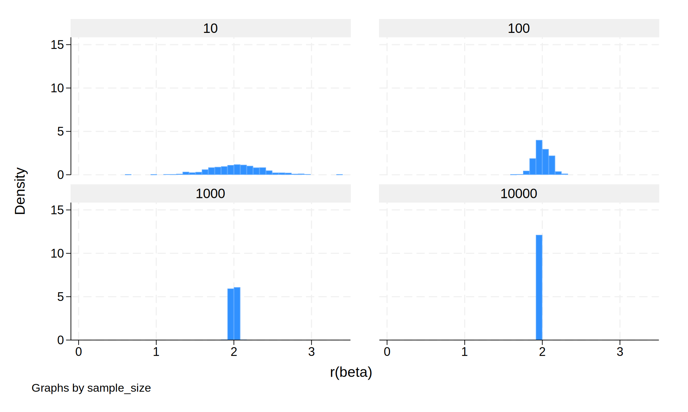
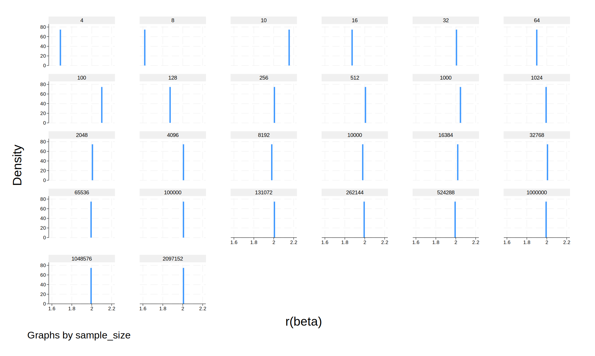
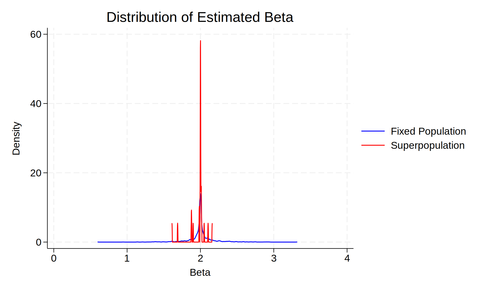

We create a simple data generating process (DGP) in which:
- X is drawn from a normal distribution: ( X \sim N(0,1) )
- error is drawn from a normal distribution.
- The outcome variable is generated as:
[ Y = 2X + error ] - This DGP is identical in both parts of the study.
Here, sampling noise is introduced only due to random draws from a fixed dataset of 10,000 individuals.
(simulate: sim_fixed)
(13,000 real changes made)
(10,000 observations deleted)
. histogram beta if fin == 1, by(sample_size) name(beta_finite, replace)

Summary statistics: Mean Group variable: sample_size
Here, each replication draws from an entirely new dataset, representing an infinite superpopulation.
As expected, standard errors (SE) and confidence intervals (CI widths) shrink as N increases.
. histogram beta if fin == 0, by(sample_size) name(beta_infinite, replace)

Summary statistics: Mean Group variable: sample_size
When sampling from a fixed population at N = 10,000, the variation in estimates is limited by the finite underlying variability of the dataset.
In contrast, the infinite superpopulation case exhibits a smoother trend as N grows.
. twoway (kdensity beta if fin == 1, lcolor(blue)) ///
(kdensity beta if fin == 0, lcolor(red)), /// legend(order(1 "Fixed Population" 2 "Superpopulation")) /// title("Distribution of Estimated Beta") xtitle("Beta") ytitle("Density") /// name(beta_density, replace)

Below we can compare the mean overall values between the infinite and finite population
Summary statistics: Mean Group variable: fin
fin | beta sem pvalue
N increases.